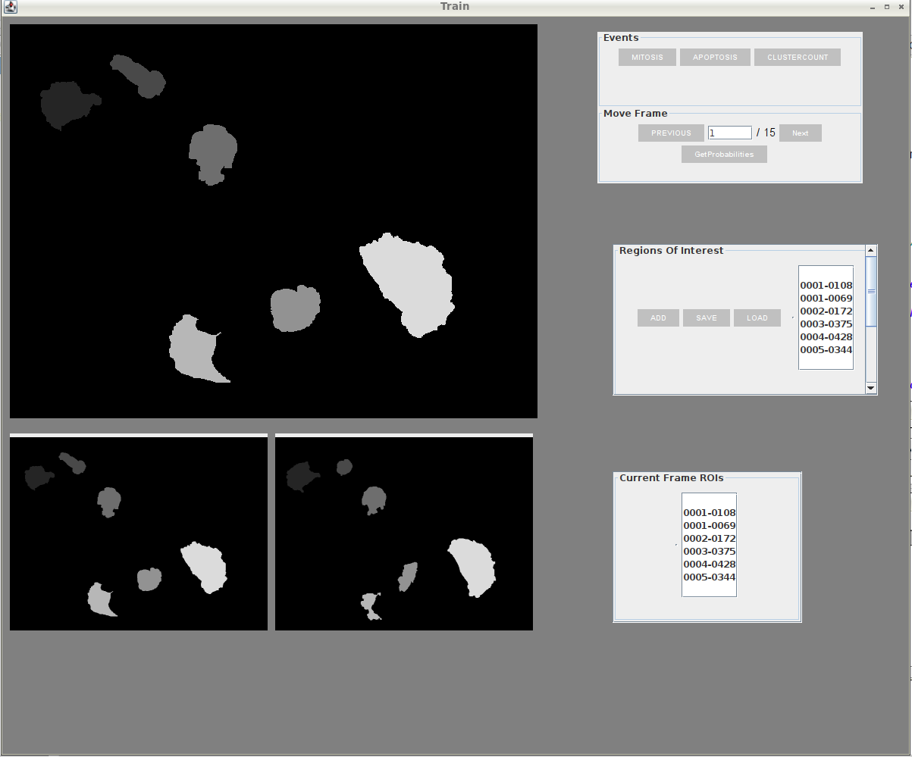
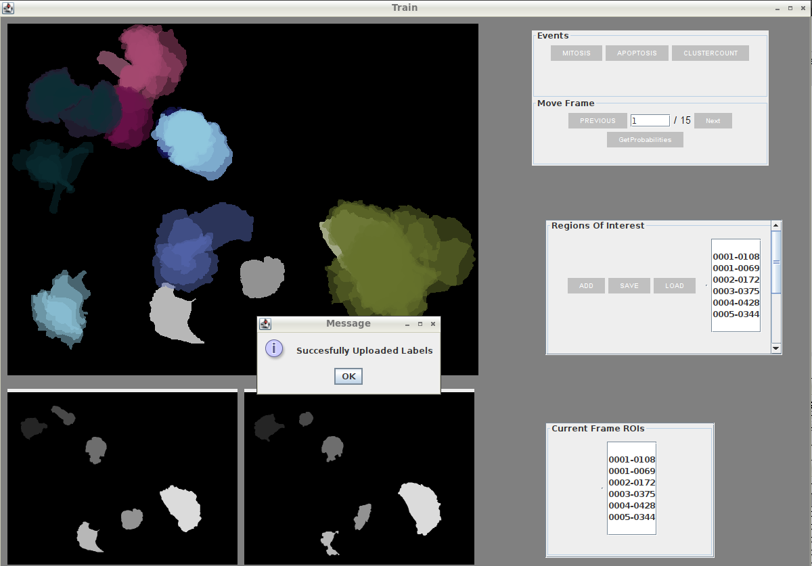
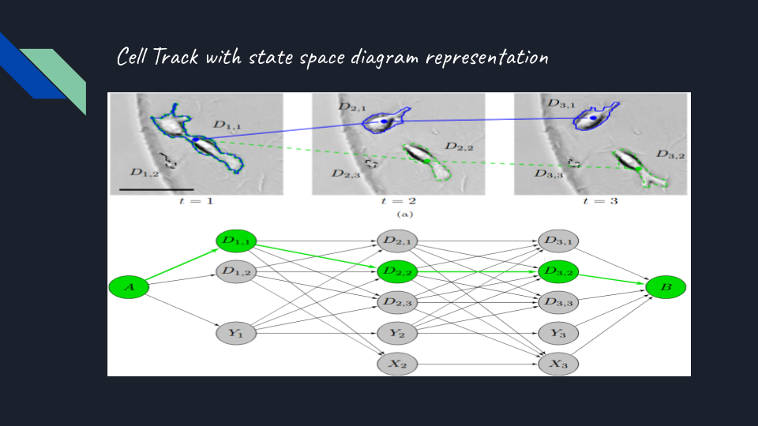
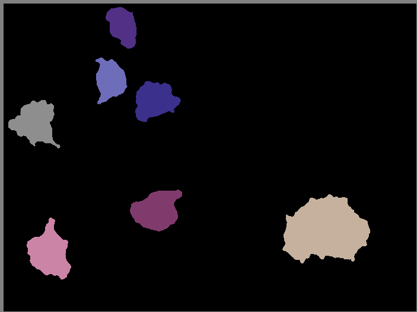

Developers
Student: Raghavendra Singh Chauhan
Mentor: Dimiter Prodanov Sumit Kumar Vohra
Organization:
International Neuroinformatics Coordinating Facility
Project description
Active Segmentation
The Active Segmentation platform for ImageJ (ASP/IJ) was developed in the scope of GSOC 2016 - 2018. The plug-in provides a general-purpose environment that allows biologists and other domain experts to use transparently state-of-the-art techniques in machine learning to achieve excellent image segmentation.ImageJ Software
ImageJ is a public domain Java image processing program extensively used in life and material sciences. The program was designed with an open architecture that provides extensibility via plug-ins.Need For Cell Tracking
Cell Tracking has gained importance in recent times due to the growing extensive research in Biology. It has become evident that in order to take full advantage of the potential wealth of information hidden in the data produced by cellular experiments, visual inspection and manual analysis are no longer adequate. To ensure efficiency, consistency, and completeness in data processing and analysis, computational tools are essential. Of particular importance to many modern live-cell imaging experiments is the ability to automatically track and analyze the motion of cell objects in images recorded using time-lapse microscopy.Project Work during GSoc Period 2020
In this(2020) edition of Google summer of code I have worked on extending the Active-Segmentation Plug-In to perform Cell Tracking on Segmented Stack. The technique employed is based on the Viterbi Algorithm widely used in Digital Communications and Natural Language Processing. I would also like to acknowledge the research paper, from where I derive the foundational idea for my project, titled Global Linking Of Cell Tracks Using The Viterbi Algorithm by Klas E.G Magnusson, Joakim Jalden, Penney M. Gilbert & Helen M. Blau.We started with a single purpose repository CellTracking for backend implementation of the algorithm and further integration and GUI developments were done inside ActiveSegmentation clone with my commits listed here
The project was approached with divide and conquer methodology. I have listed my weekly work as a Google doc. To view the weekly progress report please click here.
A Sample Use Case Presentation Video
We start with a image stack and develop a Trellis of states i.e. Detections/Extractions that allows modelling of the images and cells in the form of a Graph.
Active Segmentation-Cell Tracking Fixed Event Based Training
A still from Training Panel with Overlapping Tracked Rois using basic Migration Tracking
Cell Tracking Trellis Of States Graph with edges laden with weights equivalent to scores corresponding to events.Ref-Klas Magnusson Cell Tracking Paper 
An ImageSlice from tracked Stack with Colors representing Tracks
A section of Tracked ImageStack showing Tracks of Rois denoted by individual color
For more information on the project and idea you can refer here to my PPT on Viterbi Algorithm and Cell Tracking.
Scope For Improvisations
- Improve on GUI for displaying Tracks in a elegant manner
- Incorporate ML Classifiers for better tracking results
- Implement Swap functionality for optimizing run time
Future Developments
- Extending current tracking module with deep learning techniques
- Expanding user interaction and implementing better User Interface
- Optimizing efficiency and increasing accuracy to deal with faulty segmentation